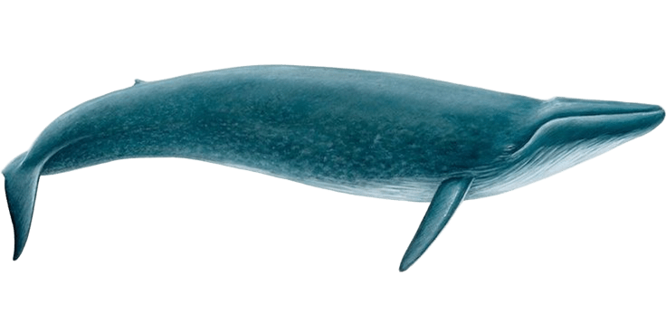
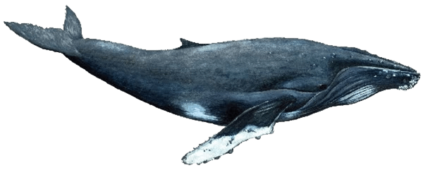
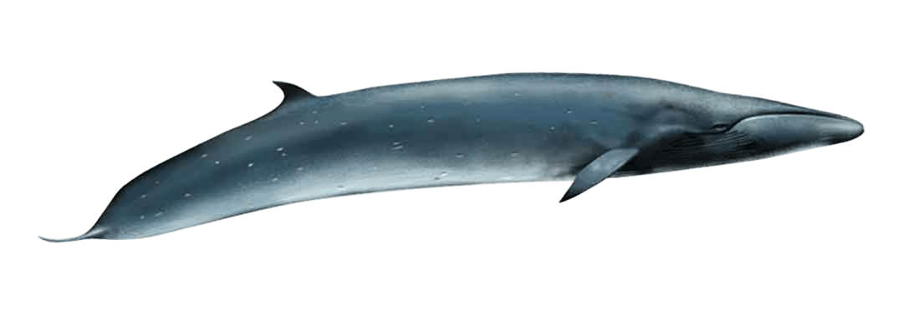
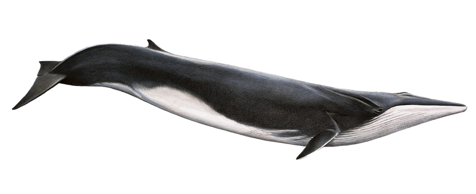
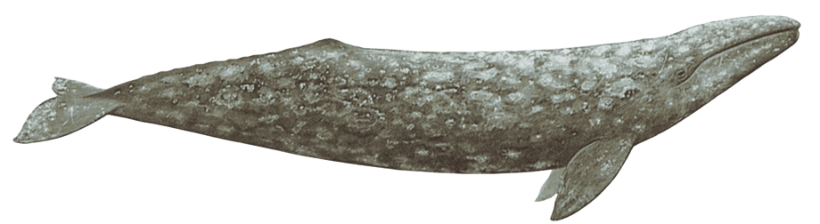
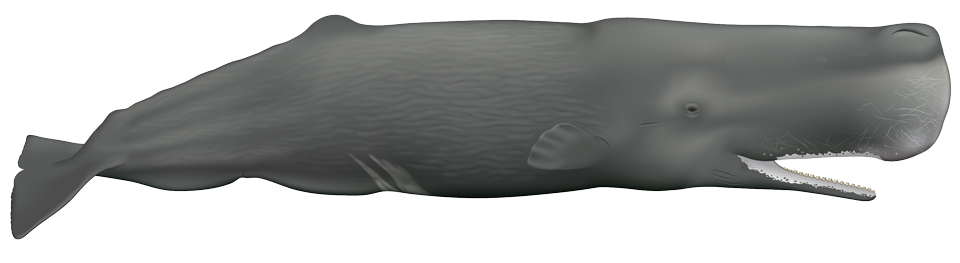
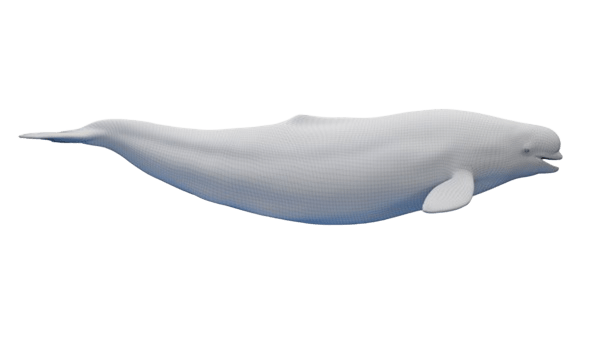
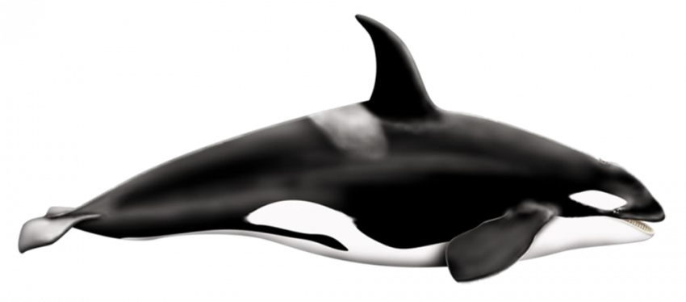
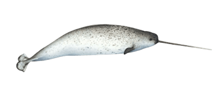

𓆟 𓆞 Sobre as Baleias 𓆝 𓆟
As baleias são mamíferos marinhos pertencentes à ordem Cetacea, que evoluíram ao longo de milhões de anos para se adaptar à vida aquática. Variando em tamanho desde espécies menores, como a beluga, até a imponente baleia azul, elas desempenham um papel fundamental nos ecossistemas marinhos, regulando populações de krill e peixes e contribuindo para o ciclo de nutrientes nos oceanos.
Esses animais apresentam comportamentos complexos, incluindo migrações sazonais extensas, vocalizações distintas e estratégias sociais e de caça. Estudos de campo e monitoramento acústico têm sido essenciais para compreender sua biologia, padrões migratórios e impactos ecológicos.
Neste site, exploraremos a diversidade das baleias, abordando sua classificação científica, dados biológicos, significado mitologico, comportamento, migrações, papel ecológico e casos especiais , como Migaloo, a jubarte albina, e a baleia dos 52 Hz.
Evolução dos Cetáceos: A Jornada dos Animais Terrestres ao Oceano
A história evolutiva dos cetáceos é um dos exemplos mais incríveis de adaptação na natureza. Esses animais, que hoje povoam os oceanos com graça e imponência, descendem de mamíferos terrestres do grupo dos artiodáctilos, que caminharam sobre a terra há cerca de 50 milhões de anos. Um dos primeiros ancestrais conhecidos é o Pakicetus, um animal que lembrava um cão ou lobo com hábitos semi-aquáticos, vivendo próximo a rios e lagos. Ele possuía membros bem desenvolvidos para caminhar em terra, mas já começava a apresentar adaptações para nadar.
Com o passar do tempo, outros ancestrais, como Ambulocetus, conhecidos como “baleias caminhantes”, passaram a passar cada vez mais tempo na água.Seus corpos começaram a se alongar, as patas traseiras foram diminuindo e a cauda ganhou força, formando uma estrutura capaz de gerar propulsão eficiente na água. A posição das narinas também mudou, deslocando-se para o topo da cabeça e dando origem ao espiráculo, característica essencial para respirar sem precisar emergir completamente.
A evolução continuou com espécies intermediárias, como o Rodhocetus, que apresentava nadadeiras peitorais bem desenvolvidas e membros posteriores parcialmente reduzidos. Por fim, surgiram os primeiros cetáceos totalmente aquáticos, como o Basilosaurus, que podia atingir mais de 15 metros e já se locomovia exclusivamente por natação.
Essa trajetória evolutiva resultou na diversificação dos cetáceos em duas grandes subordens:
Mysticeti (baleias de barbatanas): Possuem estruturas chamadas barbatanas, que funcionam como filtros. Elas se alimentam principalmente de krill e plâncton, engolindo grandes volumes de água e depois expulsando-a, retendo o alimento. Exemplos incluem a baleia-azul (Balaenoptera musculus) e a jubarte (Megaptera novaeangliae).
Odontoceti (cetáceos dentados): Incluem golfinhos, botos, cachalotes e orcas. Possuem dentes e são predadores ativos. Utilizam a ecolocalização, emitindo sons que retornam como ecos, permitindo localizar presas mesmo em águas turvas ou profundas.
Curiosidade científica: estudos genéticos recentes mostram que o DNA dos cetáceos ainda carrega sinais de seus ancestrais terrestres, evidenciando que mesmo os gigantes marinhos modernos têm raízes que remontam a pequenos mamíferos que um dia caminharam sobre a terra firme.
Diferenças entre Baleias e Golfinhos
Embora pertençam à mesma ordem, baleias e golfinhos têm diferenças marcantes que refletem suas estratégias de sobrevivência:
Tamanho e Estrutura Corporal:
Baleias geralmente atingem dimensões gigantescas. A baleia-azul, por exemplo, é o maior animal que já existiu, podendo ultrapassar 30 metros de comprimento e pesar até 200 toneladas. Golfinhos, por outro lado, são menores e mais ágeis, medindo em média 2 a 4 metros, com exceções como a orca (Orcinus orca), que pode chegar a 9 metros.
Alimentação e Adaptação Dentária:
Baleias de barbatanas (Mysticeti): possuem filamentos queratinosos chamados barbatanas, usados para filtrar grandes volumes de água e reter plâncton ou pequenos crustáceos.
Golfinhos e outros cetáceos dentados (Odontoceti): caçam peixes, lulas e até outras espécies de mamíferos marinhos, utilizando dentes afiados e técnicas cooperativas de caça.
Comportamento Social e Comunicação:
Baleias tendem a ser mais solitárias ou viver em pequenos grupos familiares. Elas emitem sons de baixa frequência, conhecidos como canções de baleia, que podem percorrer centenas de quilômetros e são usados para comunicação e reprodução. Golfinhos, por outro lado, vivem em grupos complexos chamados pods, nos quais há intensa interação social. Eles se comunicam com uma variedade de sons, incluindo assobios e cliques usados para ecolocalização, cooperam na caça e cuidam coletivamente dos filhotes.
Curiosidades Comportamentais: Alguns golfinhos demonstram comportamento altruísta, ajudando animais feridos ou até humanos em perigo. Baleias jubarte são conhecidas por suas acrobacias, saltando e batendo caudas na superfície, comportamento que ainda intriga cientistas, podendo ter funções de comunicação ou socialização.
Importância Ecológica dos Cetáceos: Guardiões dos Oceanos
Os cetáceos exercem funções essenciais nos ecossistemas marinhos, sendo verdadeiros engenheiros ecológicos.
Regulação da Cadeia Alimentar:
Ao se alimentarem de peixes, lulas ou plâncton, controlam populações de diferentes espécies, mantendo o equilíbrio dos oceanos. A ausência de cetáceos pode levar à superpopulação de certas espécies, causando desequilíbrios ecológicos graves.
Ciclo de Nutrientes:
Suas fezes são ricas em ferro, nitrogênio e outros nutrientes que fertilizam o fitoplâncton, microrganismos fundamentais na base da cadeia alimentar marinha. O fitoplâncton, por sua vez, absorve CO₂ da atmosfera, ajudando a reduzir o efeito estufa e contribuindo indiretamente para o combate às mudanças climáticas.
Bioindicadores Ambientais:
Por serem sensíveis à poluição, à sobrepesca e à degradação dos habitats, a saúde das populações de cetáceos reflete o estado geral dos oceanos. Cientistas monitoram esses animais para detectar mudanças ambientais, como aumento de metais pesados ou contaminação química.
Impacto Cultural e Científico:
Além do papel ecológico, cetáceos inspiram ciência, arte e cultura em diversas civilizações. Seus comportamentos complexos, comunicação sofisticada e interação social têm sido estudados para compreender inteligência animal, cooperação e até emoções nos mamíferos marinhos.
Curiosidade Ecológica: Recentes estudos mostram que os golfinhos têm a capacidade de se reconhecer no espelho, algo raro no reino animal, o que indica autoconsciência—a capacidade de perceber a si mesmo como indivíduo. Isso reforça a ideia de que os cetáceos não são apenas animais, mas seres inteligentes com papéis ecológicos e sociais complexos.
Espécies de Baleias
Baleia Azul
O maior animal do planeta, alimenta-se de krill e plâncton.
Baleia Jubarte
Conhecida por seus cantos e saltos, habita oceanos tropicais e polares.
Baleia Sei
Rápida e ágil, alimenta-se de pequenos crustáceos e krill.
Baleia Comum
Espécie migratória que se alimenta de plâncton e pequenos peixes.
Baleia Franca do Atlântico Norte

Espécie ameaçada, conhecida por nadar perto da costa.
Baleia Cinzenta
Famosa por suas longas migrações entre regiões polares e tropicais.
Cachalote
Predador de lulas gigantes, possui comunicação complexa por sons.
Beluga
Pequena baleia branca, conhecida como "canário do mar" pelos sons que emite.
Orca
Predadora no topo da cadeia alimentar, vive em grupos familiares chamados pods.
Narval
Conhecido como "unicórnio do mar", possui um longo dente cilíndrico na cabeça.